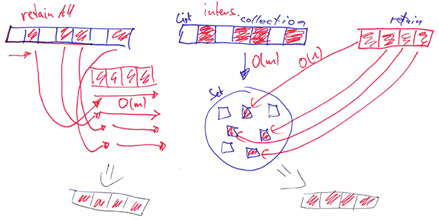
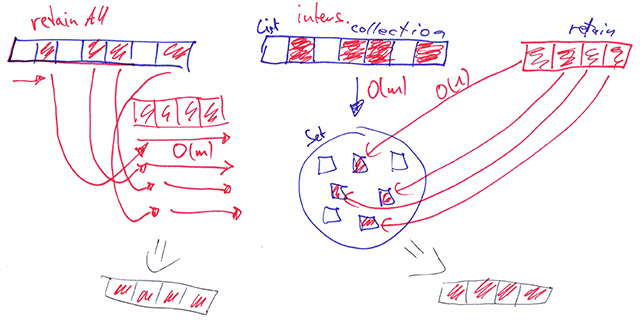

Oliver Moseler, M.Sc.
Doctoral Researcher and Teaching Assistant
Software Engineering Group
Department of Computer Science
University of Trier
Postal address
Universität Trier
Fachbereich IV
Informatikwissenschaften
54286 Trier, Germany
Email: moseler@uni-trier.de
Participation in Summer/Winter Schools or Seminars
2018
Visualizing Systems and Software Performance - GI-Dagstuhl Seminar 18283 (VSSP '18) Dagstuhl - Germany
2017
Halmstad Summer School on Testing (HSST '17) Halmstad - Sweden
PC Memberships
– cancelled – International Workshop on Visual Analytics in Supercomputing and Performance
Engineering (VASPE '19)
Mumbai -
India
Research projects
 

Publications
2020
Oliver Moseler, Felix Lemmer, Sebastian Baltes, and Stephan Diehl: On the Diversity and Frequency of Code Related to Mathematical Formulas in Real-World Java Projects. In: Journal of Systems and Software.
Oliver Moseler, Michael Wolz, and Stephan Diehl: Visual Breakpoint Debugging for Sum and Product Formulae. In: 8th IEEE Working Conference on Software Visualization (VISSOFT'20).
2015
Sebastian Baltes, Oliver Moseler, Fabian Beck, and Stephan Diehl: Navigate, Understand, Communicate: How Developers Locate Performance Bugs. In: 9th International Symposium on Empirical Software Engineering and Measurement (ESEM'15).
2013
Fabian Beck, Oliver Moseler, Stephan Diehl, and Günter Daniel Rey: In situ understanding of performance bottlenecks through visually augmented code. In: 21st International Conference on Program Comprehension (ICPC'13).
Supervised Theses
2020
Robin Essig: Analyse von Lock-Contention Events in nebenläufigen Java Programmen (Master's thesis)
Charel Irrthum: TrieRoad - Eine 3D Visualisierung von Call Stack Traces über die Zeit: Muster und Phänomene nebenläufiger Programme (Master's thesis)
Lucas Kreber: In-Situ-Visualisierung zur Performanceanalyse von nebenläufigen Programmen (Master's thesis)
Lukas Jung: py-PAL: Asymptotic Performance Analysis in Python (Master's thesis)
Thomas Berg: Android Energy Profiling (Bachelor's thesis)
2018
Oliver Sänger: Statische Programmanalyse zur Formelerkennung (Master's thesis)
Frank Aßmann: Performanzuntersuchungen zu Java (Bachelor's thesis)
2017
Felix Lemmer: Suche nach Formelcode in Softwarearchiven (Master's thesis)
Michael Wolz: Konzepte und Prototyp zum visuellen Debuggen von Formelcode (Bachelor's thesis)
Fabian Hasselbach: Flexible Logdatenvisualisierung (Bachelor's thesis)
Teaching
Winter 2020/2021
Master
- Tutorial of the course Advanced Software Engineering (Fortgeschrittene Softwaretechnik)
- Research seminar / internship Software Engineering
Bachelor
- Individual lectures on Debugging and Profiling in the scope of the course Tools of Computer Science
Summer 2020
Master
- Tutorial of the course Fundamentals of Computer Graphics (Grundlagen der Computergrafik)
- Research seminar / internship Software Engineering
Bachelor
- Individual lecture on Concurrency, Threads and Synchronization using Java Monitors in the scope of the course Programming II
- Tutorial of the course Programming II
- Individual lectures on Debugging and Profiling in the scope of the course Tools of Computer Science
Winter 2019/2020
Master
- Tutorial of the course Compiler Construction and Analysis of Programs (Übersetzung und Analyse von Programmen)
- Research seminar / internship Software Engineering
Bachelor
- Individual lecture on Design Patterns in the scope of the course Software Engineering
- Tutorial of the course Software Engineering (Softwaretechnik)
- Individual lectures on Debugging and Profiling in the scope of the course Tools of Computer Science
Summer 2019
Master
- Tutorial of the course Fundamentals of Computer Graphics (Grundlagen der Computergrafik)
- Research seminar / internship Software Engineering
Bachelor
- Individual lecture on Concurrency, Threads and Synchronization using Java Monitors in the scope of the course Programming II
- Tutorial of the course Programming II
- Individual lectures on Debugging and Profiling in the scope of the course Tools of Computer Science
- Seminar on Concurrent Programming in Java
Winter 2018/2019
Master
- Individual lectures on Ant, Profiling and Java Bytecode Instrumentation in the scope of the course Advanced Software Engineering
- Tutorial of the course Fundamentals of Computer Graphics (Grundlagen der Computergrafik)
- Research seminar / internship Software Engineering
Bachelor
- Individual lecture on Design Patterns in the scope of the course the course Software Engineering
- Tutorial of the course Software Engineering (Softwaretechnik)
- Individual lectures on Debugging and Profiling in the scope of the course Tools of Computer Science
- Seminar on Dynamic Program Analysis, Performance Testing and Profiling
Summer 2018
Master
- Tutorial of the course Compiler Construction and Analysis of Programs (Übersetzung und Analyse von Programmen)
- Research seminar / internship Software Engineering
Bachelor
- Individual lecture on Concurrency, Threads and Synchronization using Java Monitors in the scope of the course Programming II
- Individual lectures on Debugging and Profiling in the scope of the course Tools of Computer Science
- Tutorial of the course Programming II
Winter 2017/2018
Master
- Individual lectures on Profiling and Java Bytecode Instrumentation in the scope of the course Advanced Software Engineering
- Research internship Software Engineering
Bachelor
- Individual lectures on Software Architecture and Design Patterns in the scope of the course Software Engineering
- Tutorial of the course Software Engineering (Softwaretechnik)
- Tutorial of the course Programming Ib
- Individual lectures on Debugging and Profiling in the scope of the course Tools of Computer Science
Summer 2017
Master
- Tutorial of the course Compiler Construction and Analysis of Programs (Übersetzung und Analyse von Programmen)
- Research seminar / internship Software Engineering
Bachelor
- Individual lecture on Concurrency, Threads and Synchronization using Java Monitors in the scope of the course Programming II
- Individual lectures on Debugging and Profiling in the scope of the course Tools of Computer Science
- Tutorial of the course Programming Ia
Winter 2016/2017
Master
- Tutorial of the course Fundamentals of Computer Graphics (Grundlagen der Computergrafik)
- Research internship Software Engineering
Bachelor
- Lecture and tutorial of the course Software Engineering (Softwaretechnik)
- Individual lectures on Debugging and Profiling in the scope of the course Tools of Computer Science
Summer 2016
Bachelor/Master
- Research seminar Software Engineering
Bachelor
- Individual lectures on Debugging and Profiling in the scope of the course Tools of Computer Science
Copyright Notice
The documents distributed by this server have been provided by the contributing authors by means to ensure timely dissemination of scholarly and technical work on a noncommercial basis. Copyright and all rights therein are maintained by the authors or by other copyright holders, notwithstanding that they have offered their works here electronically. It is understood that all persons copying this information will adhere to the terms and constraints invoked by each author‘s copyright. These works may not be reposted without the explicit permission of the copyright holder.